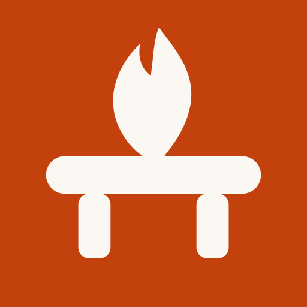
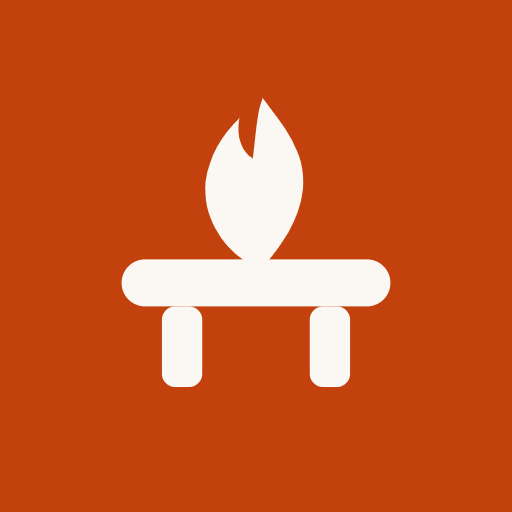

Set de iconos


Sistema de marca · V2 · Noviembre de 2026
TukiTuki deja de ser una letra disfrazada de mesa. Ahora es una mesa con una llama encendida en el centro: el lugar donde se encuentran el restaurante y el comensal, y la idea que prende al probar un plato. La chispa se hizo llama y vive en el punto de la «i».
El tablero es la promesa del restaurante. La llama es lo que ocurre cuando alguien se sienta. Las dos patas son los dos lados de TukiTuki: quien cocina y quien descubre.
Un objeto, no una letra. Tablero amplio y dos patas: la mesa para dos que se comparte. Sin pedestal, sin base: las patas son los dos lados.
La chispa de cuatro puntas se retira: se confundía con el destello de otras marcas de IA. La llama es propia, cálida y de restaurante. Ya no flota al lado de una letra: se apoya en el tablero. Es el hallazgo, la recomendación y la conversación.
La «i» pierde su punto y gana la llama. En «TukiTuki» hay dos: una por cada Tuki. El nombre completo se vuelve un ritmo, no una repetición.
La base se apoya en y = 32,5. No hay aire entre la llama y la mesa: son una sola pieza. Esa unión es la que distingue la marca de una estrella decorativa.
Las patas miden 6 × 12 y caen rectas. El tablero vuela 6 unidades por cada lado: la mesa se reconoce por el vuelo, no por una base.
Todo el símbolo comparte relleno. En la baldosa, el terracota es el fondo y el papel es la marca; nunca se rellena la llama de otro color.
El símbolo completo no baja de 32 px. A 24 y 16 se usa la baldosa: a 16 la mesa se lee y la llama queda como una luz.
Pestaña real a 16 px.


El logotipo está trazado desde la fuente. La llama ocupa el punto de la «i»: 165 × 250 unidades, un 67 % más alta que el punto original. Inter se queda para el texto y el descriptor.
Marca horizontal sobre papel o baldosa sólida.
Separar la llama del tablero.
Rotar, inclinar o estirar la marca.
Ponerla sobre una foto o un degradado sin velo.
La marca horizontal vive en la barra a 22 px; el símbolo suelto, en la baldosa de 32 px. El logotipo nunca compite con el nombre del restaurante: la marca de Tuki va en el pie o en la cabecera de la plataforma.